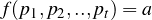
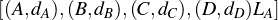
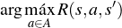
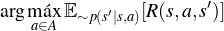
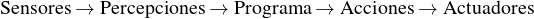
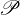
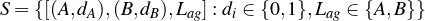
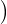
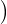
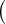

Agentes inteligentes
Concepto de agente
En IA se necesita representar entidades que sea inteligentes. El referente de la inteligencia es
el ser humano. Cabe preguntarse ¿qué caracteriza las acciones inteligentes de los seres
humanos?
Los seres humanos cuentan con diferentes formas de actuar, pero de manera general
actúan a través de órganos (brazos, piernas, etc.) que les permiten interactuar con un ambiente
(el entorno en el que vive, o de forma más general el mundo en el que habita); estas acciones
se dicen inteligentes cuando responden a un razonamiento que el agente realiza a partir de
conocimiento previamente adquirido. Este conocimiento se da por su interacción con el
mundo, por medio de sensaciones, las cuales son concebidas por el ser humano por medio de
sus órganos sensores.
Esta narrativa simplifica las acciones inteligentes de los seres humanos. Lo que nos
interesa es mapear esta abstracción a un sistema computacional. Por tanto, podemos tomar los
siguientes elementos con los que esperamos que un sistema computacional “inteligente”
cuente:
-
Sensores:
-
Los sensores son los componentes de entrada de un agente, aquellos elementos
del agente que le permiten reconocer su ambiente.
-
Actuadores:
-
Los actuadores son los componentes de salida de un agente, aquellos elementos
que le permiten interactuar con su ambiente.
-
Percepción:
-
Es la entrada que recibe un agente, aquello que es captado por los sensores del
agente.
-
Ambiente:
-
El ambiente se compone de los elementos o condiciones en que el agente se
desenvuelve y con los cuales puede interactuar a través de sus actuadores.
La Figura 1 muestra la estructura de un agente en forma gráfica.
Con lo anterior en mente, podemos pasar a definir lo que entendemos por un
agente:
Definición 1 (Agente). Un agente es cualquier entidad que percibe su ambiente a través
de sensores, y que actúa en el ambiente a través de actuadores.
El agente tendrá un conocimiento previo que se manifiesta en el siguiente concepto:
Definición 2 (Secuencia de percepciones). Una secuencia de percepción es la historia
completa de lo que el agente ha percibido hasta el momento actual. Sea pi la
representación de la percepción i, la secuencia de percepciones es entonces la secuencia
p1,p2,...,pt; es decir, las representaciones de las percepciones hasta el momento t.
El objetivo de un agente será llevar a cabo una acción que sea considerada inteligente. Por
acción entendemos:
Definición 3 (Acción). La acción de un agente es la interacción de éste, a partir de los
actuadores con el ambiente, y depende del conocimiento construido a partir de la
secuencia de percepciones.
Para manifestar la acción, debemos definir una función que “traduzca” el conocimiento
previo en la acción misma, la interacción con el ambiente. Esta función se conoce como función
del agente:
Definición 4 (Función del agente). La función del agente es aquella función que toma como
entrada la secuencia de percepciones y emite como salida una acción:

Tal que pi, i = 1,...,t, son percepciones, y a es una acción.
La función del agente se implementa por medio de un programa (computacional) que se
conoce como el programa del agente:
Definición 5 (Programa del agente). El programa del agente es una caracterización
interna de la función del agente. Se trata de un programa que ejecuta la función del
agente.
Ejemplo 1. Un ejemplo clásico para la construcción de un agente es el mundo de la
aspiradora. Se cuenta con un agente aspiradora que actúa sobre un ambiente dividido
en cuartos; en el caso más simple se cuenta con dos cuartos. Los elementos de este
mundo son entonces:
-
Sensores: El agente puede percibir si hay suciedad o no en el cuarto en que se
encuentra.
-
Actuadores: El agente cuenta con la opción de limpiar, una aspiradora, o bien
moverse, a partir de elementos mecánicos.
-
Percepción: El agente puede percibir si hay suciedad o no. Estas percepciones
se simbolizan con 1 (sucio) y 0 (limpio). Se puede tener una secuencia de
percepciones en {0,1}*.
-
Ambiente: El ambiente está conformado de cuartos. Los cuartos se describen
como cuadrados generalmente numerados con letras, A, B, etc.
La Figura 2 muestra un ejemplo de mundo de la aspiradora con sólo dos cuartos A y B. En
este caso, la aspiradora está en el cuadro A, y ambos cuartos están sucios.
En este mundo de la aspiradora con dos cuadros, podemos definir un programa en base al
siguiente algoritmo.
Algorithm : Mundo de la aspiradora
1: procedure decide(location, dirt)
2: if (location = A or location = B) and dirt = 1 then
3: return Limpia
4: end if
5: if location = A and dirt = 0 then
6: return Derecha
7: end if
8: if location = B and dirt = 0 then
9: return Izquierda
10: end if
11: end procedure
Este algoritmo revisa las percepciones que consisten en la localización del agente
(location) y si el ambiente está o no sucio (dirt). Si la percepción implica que el cuarto está
sucio, entonces se ejecutará la acción de limpiar. Por su parte si el agente se encuentra
se encuentra en el cuadro A, ejecutará la acción ‘Derecha’ para moverse hacia el
cuarto B; si está en el cuarto B, la acción que ejecutará será izquierda para moverse a
A.
Si bien en este ejemplo podemos garantizar que el agente limpiará todos los cuartos,
podemos ver que conforme el número de cuartos aumente y la disposición de estos se haga más
intrincada, definir un algoritmo de este tipo será más complejo. En este ejemplo, tenemos 4
situaciones: 1) el agente está en A y A está sucio; 2) el agente está en B y B está sucio; 3) el
agente está en A y A está limpio; y 4) el agente está en B y B está limpio. Podemos escribir estos
estados como [(A,dA),(B,dB)LA], donde LA es la locación del agente y l ∈{0,1} nos dice si el
cuadro está o no limpio.
Si el número de cuadros aumenta, por ejemplo con 4 cuadros, tendremos

Como vemos, en este caso tenemos 24 = 16 posibles configuraciones del entorno, además
de las 4 posibles posiciones en que el agente puede estar localizado; por lo que el total de
estados que tendremos será 4⋅16 = 64 posibles estados. En general, para un mundo de
aspiradora con n cuadros, tendremos n⋅2n estados. Cuando n es muy grande, definir un
programa como el anterior se vuelve casi imposible.
Agentes racionales
Las acciones realizadas por agentes, por ejemplo los seres humanos, no siempre llevan a
resultados satisfactorios. Dentro del espectro de las acciones humanas podemos
considerar acciones impulsivas, que respondan a costumbres o sentimientos, sesgadas,
etc.
Cuando nos enfocamos en generar sistemas computacionales inteligentes, este tipo de
decisiones deben ser evitadas. No buscamos que un sistema de inteligencia artificial tenga
sesgos.
De forma general, buscamos que estos sistemas nos lleven a solucionar problemas
específicos (modelo estándar) de la forma más eficiente posible, buscamos que las decisiones
que el agente tome sean óptimas y que los sesgos se reduzcan lo más posible.
Para buscar que los agentes dentro de los sistemas computacionales de IA sean lo más
efectivos posibles, nos enfocamos únicamente en un tipo particular de agentes, los agentes
racionales:
Definición 6 (Agente racional). Un agente racional es un agente que realiza las
acciones óptimas con base en la información que tiene disponible.
Para entender lo que se quiere decir por ‘óptimo’ se suele recurrir a la teoría consecuencialista,
la cual señala que el comportamiento de un agente se puede evaluar a partir de las
consecuencias que tienen sus acciones. Para medir el impacto de las consecuencias de un
agente se tiene una regla general:
Es mejor medir la utilidad de acuerdo con lo que se quiere para el entorno,
más que de acuerdo con cómo se cree que el agente debe comportarse.
Sin embargo, este tipo de reglas dependen tanto del entorno como de un sujeto que evalúe
aquello que se quiere para el entorno. En busca de formalizar más la medición de estas
consecuencias introducimos el concepto de medida de rendimiento, la cual evalúa (de
acuerdo a un criterio dado) una secuencia de estados del ambiente que es resultado de una
secuencia de acciones del agente.
La medida de rendimiento toma en cuenta la regla del consecuensialismo, y como se
apunta aquí debe prevalecer un criterio. Por lo general, buscaremos que este criterio responda
al problema de alineación de valores; es decir, que responda a intereses de las personas que
crean al sistema de IA.
Ejemplo 2. Consideremos como ejemplo el mundo de la aspiradora. En este entorno
podemos tomar diferentes medidas de rendimiento:
-
El número de cuadros que ha limpiado el agente en un tiempo dado.
-
El qué tan limpio resulta el entorno después de que el agente ha ejecutado sus
acciones.
-
Una combinación de los anteriores; es decir, el que tan limpio resulta el ambiente
después de la ejecución de las acciones del agente y el que tanto tiempo le toma al
agente maximizar la limpieza del ambiente.
En particular la racionalidad dependerá de cuatro elementos:
-
La medida de rendimiento que define el criterio de éxito del agente.
-
El conocimiento previo que el agente tiene del entorno.
-
Las acciones que el agente puede realizar.
-
La secuencia de percepciones del agente has el momento actual.
La Figura 3 ilustra la interaccción de estos cuatro elementos en los agentes racionales.
Para formalizar un agente racional, necesitamos entender qué es una meida de rendimiento
en términos matemáticos:
Definición 7 (Medida de rendimiento). La medida de rendimiento es una función R :
S×A×S → ℝ que toma una una acción de un estado hacia un estado resultante y le
asigna un valor de rendimiento, que determina qué tan bien aceptamos dicha acción con
su resultado.
Esta función de rendimiento dependerá de diferentes factores:
-
El problema que buscamos resolver.
-
Qué consideramos como criterio de éxito para el agente.
-
Que el éxito del agente se corresponda a los valores de quienes programan a éste.
Se debe hacer una distinción entre el rendimiento absoluto y el rendimiento esperado.
Por rendimiento absoluto entendemos el rendimiento real en un problema; es decir, lo que
haría el agente es maximizar el rendimiento conociendo con exactitud cuál es el rendimiento en
cada estado-acción del problema. Por lo que se buscaría:

Sin embargo, en la mayoría de los problemas no se conoce con exactitud el rendimiento de
cada acción, pues puede haber factores que impidan este conocimiento, como la incertidumbre,
la dinamicidad de los ambientes, etc.
Por tanto, un agente racional buscará maximizar el rendimiento esperado, es decir, el
valor esperado del rendimiento:

Finalmente, esto nos permite definir de manera más precisa el concepto de agente
racional.
Definición 8 (Agente racional). Un agente racional es un agente que selecciona, dada
una secuencia de percepciones y su conocimiento previo, la acción que maximice la
medida de rendimiento.
Entornos y estructura de agentes
Ante la perspectiva de los agentes racionales, surgen las siguientes preguntas:
-
¿Qué tipo de problemas se consideran bajo el modelo estándar de la IA?
Esto lo responde el concepto de ambiente o entorno, pues los problemas se
conceptualizan dentro de los entornos en los que los agentes interactúan.
-
¿Qué tipo de agentes se pueden diseñar según el tipo de problema (entorno) se tenga?
Esto tiene que ver con los tipos de agentes.
Entornos
Para el diseño de un agente de Inteligencia Artificial es esencial el entendimiento del entorno
de trabajo:
Definición 9 (Entorno de trabajo). El entorno de trabajo se específica por medio de cuatro
elementos conocidos como REAS (o PEAS en inglés) que son:
-
Medida de rendimiento
-
Entorno
-
Actuadores
-
Sensores
Ejemplo 3. En el mundo de la aspiradora, podemos pensar que tenemos el siguiente
entorno de trabajo (Tabla 1):
Agente | Medida de
rendimiento | Entorno | Actuadores | Sensores |
|
|
|
|
|
Aspiradora | Limpieza del
entrono
/ tiempo de
ejecución | Estructura de
cuadros | Mecanismo
de aspiración,
llantas | Cámaras
que observan
la suciedad |
|
|
|
|
|
| |
Cuadro 1: REAS para el mundo de la aspiradora
Para poder diseñar el agente en base al RAES es importante entender la naturaleza de los
entornos, pues estos definen los problemas que queremos resolver, los objetivos y la medida
de rendimiento.
Tipos de entornos
Los entornos se dividen según diferentes aspectos que los constituyen:
-
Observabilidad. Según qué tanta información se puede obtener del ambiente
tenemos:
-
Entorno totalmente observable: El entorno de trabajo es completamente
observable si los sensores del agente tienen acceso a la información total de
un estado del ambiente en un tiempo dado.
-
Entorno parcialmente observable: El entorno de trabajo es parcialmente
observable si se tiene información parcial del ambiente.
-
Entorno efectivamente totalmente observable:
Un entorno es efectivamente totalmente observable si el agente detecta los
aspectos relevantes para realizar una acción.
-
Entorno no observable: Si el agente no tiene sensores, el entorno es no
observable.
-
Número de agentes. Según el número de agentes que interactúan en el entorno,
tenemos:
-
Entorno de agente individual: Un agente individual implica que hay un
sólo agente que interactúa con el ambiente.
-
Entorno multiagente: Hablamos de multiagentes cuando se tienen dos o más
agentes que se afectan entre sí. En este caso, se pueden considerar dos
subtipos:
-
Entorno competitivo: Maximizar el rendimiento de un agente implica
minimizar el rendimiento de otro(s) agente(s). Por ejemplo, ajedrez.
-
Entorno coperativo: Las acciones de cada agente se orientan a
maximizar el rendimiento de todos los agentes. Por ejemplo, autos sin
conductor.
-
Determinismo. Según si el entorno tiene un comportamiento o no predecible
tenemos:
-
Entorno determinista: Un entorno es determinista si el estado de éste está
determinado completamente por las acciones del agente y el estado previo.
-
Entorno estocástico: Es un entorno no-determinista donde los estados
siguientes pueden tener varias salidas o bien donde existen aspectos no
observables.
-
Entorno estratégico: Si el entorno es determinista, excepto por las acciones
de otros agentes, decimos que es estratégico.
-
Secuencialidad. Según la forma en que se den las secuencias de situaciones del entorno
se divide en:
-
Entorno episódico: En un entorno episódico consiste, la experiencia del
agente se divide en episodios, en cada uno de los cuales el agente recibe
una percepción y ejecuta una acción en base en ésta.
-
Entorno secuencial: En un entorno secuencial, la decisión actual puede
afectar a las futuras decisiones del agente.
-
Dinamicidad. Según cómo se dan los cambios en el entorno se tienen los siguientes
casos:
-
Entorno estático: Se dice que un entorno es estático si éste no cambia cuando
el agente delibera.
-
Entorno dinámico: Se dice que un entorno es dinámico si éste puede cambiar
mientras el agente delibera.
-
Continuidad. Según la estructura del entorno se da:
-
Entorno discreto: Se dice que un entorno es discreto cuando sus estados,
las percepciones y las acciones son discretas.
-
Entorno continuo: Cuando el entorno se configura de tal forma que sus
estados se dan de manera continua.
-
Información. Según la información que se tenga del entorno, tenemos:
-
Entorno conocido: Diremos que un entorno es conocido si los resultados
de las acciones de los agentes se conocen de antemano.
-
Entorno desconocido: Un entorno es desconocido cuando no se conocen
los resultados de las acciones de los agentes.
Ejemplo 4. El mundo de la aspiradora cuenta con un entorno que se define por las
siguientes características:
-
Entorno completamente observable: en todo momento el agente tiene información
de lo que sucede en el mundo.
-
Entorno de agente individual: el único agente que interactúa en el mundo es la
aspiradora.
-
Entorno determinista: el estado del mundo está completamente determinado por
las acciones de la aspiradora y el estado previo.
-
Entorno episódico: las acciones se dividen en episodios, y no hay afectación en los
estados futuros por decisiones pasadas.
-
Entorno estático: el mundo sólo cambia cuando el agente realiza una acción.
-
Entorno discreto: como lo hemos planteado, el mundo se divide en cuadros que
tienen un entorno discreto. Aunque si plantearnos un agente aspiradora que
actuara en el mundo real, podríamos pensar que el entorno es continuo.
-
Entorno conocido: los resultados a cada acción del agente son conocidas de
antemano, sabemos que si se aspira un cuadro este se limpiará, así como los
estados resultantes de los desplazamientos del agente.
Estructura de agentes
Ya hemos hablado del programa del agente, que es la implementación de la función del agente,
la cuya mapea una secuencia de percepciones hacia una acción o un conjunto de acciones. El
programa del agente es parte de la estructura de éste, pero también debemos contar con una
arquitectura:
Definición 10 (Arquitectura del agente). La arquitectura del agente es el o los
elementos físicos que conforman a éste, y el cual cuenta con sensores y actuadores. La
arquitectura del agente se encargará de ejecutar el programa del agente.
De esta forma, entenderemos a un agente como la suma de su programa y de su
arquitectura; esto es:
De esta forma, las decisiones del agente se basarán en una secuencia de pasos: primero, los
sensores, que forman parte de la arquitectura, recibirán las percepciones del ambiente;
posteriormente, las percepciones se transmitirán al programa para que este seleccione las
acciones; finalmente, las acciones se ejecutará por medio de los actuadores. En resumen, se
tiene la secuencia:

Tipos de agentes
A partir del programa del agente podemos hacer una clasificación en varios tipos de agentes
según la forma en que se deciden las acciones de acuerdo a las percepciones.
Agente dirigido mediante tabla
Definición 11 (Agente dirigido mediante tabla). Un agente dirigido mediante tabla se
trata de un agente el cual cuenta con una tabla que contiene la asociación de una
secuencia de percepciones con una acción. De esta forma, el agente dirigido mediante
tabla, al recibir una percepción, revisa la tabla y regresa la acción correspondiente en
ésta.
En este sentido, el agente dirigido mediante tabla es un agente cuya información de las
acciones le es dada por el programador mediante una tabla que le diga cómo actuar en cada
caso. Esto requiere que el programador conozca las acciones esperadas ante cada secuencia
de percepciones. Este tipo de tablas son del siguiente tipo:
|
|
| Cadena de percepciones | Acción |
|
|
| p1 | a1 |
| p2 | a2 |
| | |
| p1,p2 | at+1 |
| p1,....,pt | aT |
|
|
| |
En este caso, cada pi, i = 1,2,...,t es una percepción. Como se ve, se consideran
secuencias de percpeciones, pues esto mejora la acción a elegir. Un esbozo del código de un
agente dirigido mediante tabla es el siguiente:
Algorithm : Agente dirigido mediante tabla
1: procedure Table-Driven(percept, tabla)
2: Variables estáticas: tabla; percepciones ←{}
3: percepciones ← percept
4: acción ← Consulta(percepciones, tabla)
5: return acción
6: end procedure
Ejemplo 5. Consideremos de nuevo el mundo de la aspiradora con dos cuadros. En
este caso, podemos plantear una tabla simple que sea de la forma:
|
|
| Percepción | Acción |
|
|
| (A, limpio) | Moverse a la derecha |
| (A, sucio) | Limpiar |
| (B, limpio) | Moverse a la izquierda |
| (B, sucio) | Limpiar |
| (A, sucio), (B, limpio) | Moverse a la izquierda |
| (B, sucio), (A, limpio) | Moverse a la derecha |
| (A, sucio), (B, sucio) | Limpiar |
| (B, sucio), (A, sucio) | Limpiar |
|
|
| |
En este caso, si el agente se encuentra en A y este está limpio se moverá al cuadro B, e
inversamente si está en B y este cuadro está limpio, se moverá hacia A. Pero si el cuadro en el
que se encuentra esta sucio entonces ejecutará la acción de limpiar.
El problema de un agente dirigido mediante tabla es el número de búsquedas que debe
hacer en la tabla; estas son: ∑t=1T ||t ( conjunto de posibles percepciones, T tiempo de
vida del agente). Por ejemplo, en el ajedrez, tenemos que ∑t=1T ||t = 10150.
Agente reactivo simple
Definición 12 (Agente reactivo simple). Un agente reactivo simple es un agente que
decide las acciones a partir únicamente de la percepción actual, ignorando la historia de
percepciones.
Un agente reactivo simple se basa, entonces, en condiciones de tipo “Si... entonces...” o en
forma lógica X → Y . Estas condiciones se manifiestan en el programa por medio de
reglas ‘if... then... else...’. Estas reglas requieren de un conocimiento previo del
programador, quien debe conocer las respuestas a las acciones del agente, para poder
manifestarla en este tipo de reglas. De tal forma, que se requiere de un entorno
conocido y, preferentemente, completamente observable, así como estático (pues un
cambio en el entorno mientras el agente no puede ser expresado en este tipo de
reglas) y por tanto determinista. Es decir, este tipo de agentes funciona para entornos
simples.
Una estructura simple para el programa del agente se muestra a continuación:
Algorithm : Agente reactivo simple
1: procedure Simple-Reflex(percept)
2: Variables estáticas: reglas de condición-acción
3: state ← Interpret-Input(percept)
4: rule ← Rule-Macth(state,rules)
5: action ← rule.Action
6: return action
7: end procedure
Los agentes reactivos simples no son útiles más que cuando la acción depende
únicamente de la percepción actual, lo que no es común en muchos problemas complejos de
IA.
Ejemplo 6. En el mundo de la aspiradora con dos cuadros podemos dar un conjunto de
reglas condición-acción para generar el agente reactivo simple:
Algorithm : Mundo de la aspiradora
1: procedure decide(percept) 2: action ← None 3: if percept.dirt = 1 then 4: action ← Limpiar 5: else 6: if percept.location = A then 7: return Derecha 8: end if 9: if percept.location = B then 10: return Izquierda 11: end if 12: end if 13: end procedure
Extender este agente al caso de más cuadros es también muy sencillo. Sin embargo, cuando
se cuenta con muchos cuadros el conjunto de reglas de condición-acción se puede volver
tedioso.
Agente basado en objetivos
Definición 13 (Agente basado en objetivos). Una agente basado en objetivo es aquel
que cuenta con información de un objetivo que describe la situación que se desea
alcanzar con sus acciones.
Los agentes basados en objetivos se enfocan, entonces, en alcanzar una meta previamente
definida de la manera más efectiva. Por ejemplo, un agente basado en objetivos puede ser un
agente que trace una ruta en un mapa para llegar del punto A al punto B; la meta será el
punto B y el agente buscará las acciones más afectivas que lo pueden llevar hasta
allí.
Los agentes basados en objetivos refieren a la parte de planeación y búsqueda. Estos serán
revisado con mayor profundidad en los temas de agentes de búsqueda.
Agente reactivo basado en modelos
Para salvar las restricciones del agente reactivo simple, se propone un estado interno del
agente que refleje la historia y los aspectos no observados del estado actual. En particular se
busca modelar el ambiente por medio de dos modelos complementarios; el primero de ellos
es el modelo de transición:
Definición 14 (Modelo de transición). Un modelo de transición refleja el cómo los estados del
ambiente cambian, por lo que busca modelar dos factores:
-
el cómo el mundo (ambiente) cambia conforme el paso del tiempo;
-
cómo cambia el mundo dependiendo de las acciones del agente.
El segundo modelo es el modelo sensor:
Definición 15. Modelo de sensor Un modelo de sensor modela el cómo el mundo se
refleja en las percepciones del agente.
En este sentido, el modelo de transición le dice al agente cómo cambia el mundo, ya sea de
forma dinámica o por medio de las acciones; refleja las transiciones entre los estados del
modelo. Por su parte, el modelo sensor es un modelo de las percepciones del agente.
Combinando estos dos modelos para definir un estado interno del agente tenemos el agente
reactivo basado en modelos.
Definición 16 (Agente reactivo basado en modelos). Un agente reactivo basado en modelos
es un agente que se basa en un modelo del mundo determinado por:
-
un modelo de transición; y
-
un modelo de sensor.
Esta información se guarda en un estado interno, que se modifica por los modelos y la información
de la percepción actual.
El modelo basado en modelos cuenta entonces con información previa relevante sobre el
mundo en el que interactúa. Esta información puede irse modificando a través del tiempo según las
percepciones del agente y los estados del mundo. Por tanto, este tipo de agentes puede
interactuar con entornos dinámicos y estocásticos.
Un esquema de programa para este tipo de agentes se meustra a continuación:
Algorithm : Agente reactivo basado en modelos
1: procedure Model-Based(percept)
2: Variables estáticas: state, transition_model, sensor_model, rules, action
3: state ← Update(percept,state,action,transition_model,sensor_model)
4: rule ← Rule-Macth(state,rules)
5: action ← rule.Action
6: return action
7: end procedure
Un tipo de agente basado en modelos se puede representar por medio de un
modelo gráfico probabilístico; estos se revisarán con más detalle en la parte de modelos
probabilísticos.
Agentes basados en utilidad
Ciertas características del entorno como la observabilidad parcial y/o el no determinismo
implican decisiones que deben hacerse con incertidumbre. Para esto, se adopta el principio de
utilitarismo:
Definición 17 (Principio de utilitarismo). La utilidad indica cuáles acciones son
preferibles al comparar los resultados que éstas tienen en el mundo.
Para cuantificar este principio se utiliza una función de utilidad:
Definición 18 (Función de utilidad). Una función de utilidad es una medida de
rendimiento que indica la utilidad de las acciones del agente.
De esta forma, podemos definir un agente basado en utilidad de la siguiente
forma:
Definición 19 (Agente basado en utilidad). Un agente basado en utilidad es aquel que,
dada una función de utilidad, busca maximizar el valor esperado de esta función.
Este tipo de agente pueden también pensarse dentro de agentes de aprendizaje (como
Q-Learning), así como parte de los modelos probabilísticos, de los que hablaremos más
adelante.
Agentes que aprenden
En problemas complejos, como en entornos parcialmente observables, dinámicos, estocásticos,
etc., los agentes deben adaptarse al entorno por medio de la exploración y de esta forma
aprender. Entenderemos por aprender:
Definición 20. Se aprende cuando un agente que opera sobre un entorno desconocido
mejora su rendimiento a partir de observar resultados previos de sus acciones y
evaluarlos.
El aprendizaje se puede basar en una recompensa o penalización que generan una
respuesta en el comportamiento del agente. Cualquier tipo de agente (reactivo simple,
basado en modelos, basado en objetivos o basado en utilidad) puede incorporar el
aprendizaje.
Definición 21. Un agente que aprende es un agente que mejora su rendimiento a partir de
observar resultados previos. Este agente cuenta con:
-
Elemento de aprendizaje: Determina cómo actuar en base a la crítica.
-
Elemento de actuación: Decide la acción (agente).
-
Crítica: Señala que tan bien está actuando en base al nivel de actuación.
-
Generador de problemas: Sugiere acciones exploratorias, que permitan mejorar
el rendimiento.
Representación del agente y su entorno
Considérese de nuevo el mundo de la aspiradora, en donde se cuenta con un agente racional, la
aspiradora, cuyo objetivo es limpiar su entorno. Su medida de rendimiento se basará en qué tan
limpio deja el entorno en el menor tiempo posible. Por tanto podemos decir que la medida de
rendimiento adopta los siguientes valores:
De esta forma, maximizar el rendimiento equivale a limpiar todos los cuartos de la forma
más rápida posible. Por ejemplo, consideremos el mundo de la aspiradora con cuatro
cuartos:
Un agente reactivo simple podría tomar las siguientes instrucciones:
if s = sucio then {
limpia
}
else{
if s.location = A {
mover a la derecha
}
if s.location = B {
mover abajo
}
if s.location = D{
mover a la izquierda
}
if s.location = C{
mover arriba
}
}
Estas instrucciones garantizan que el agente siempre termine de limpiar todo el entorno;
sin embargo, la limpieza no siempre se hará en el menor tiempo posible. Por ejemplo, si sólo los
cuartos A y C están sucios, la mejor estrategia es, iniciando en A, limpiar este cuarto y
moverse hacia abajo para limpiar C; pero en este caso, el agente siempre revisará todos los
cuadros empezando por A.
Este agente carece de una exploración y una planeación, pues si bien puede solucionar el
problema, no lo hace de la manera más efectiva. Ahora bien, si en lugar de tener 4 cuartos, se
cuenta con un mayor número, por ejemplo 64, o 81 o o incluso más, la carencia de una
planeación se hará más patente.
Para esto, se buscan diferentes estrategias que permitan, además de solucionar el
problema, hacerlo de la manera más eficiente. Para poder aplicar estas estrategias se necesita
de una formalización del problema; es decir, describir el problema en términos matemáticos
precisos.
Para caracterizar nuestro problema debemos tomar en cuenta las siguientes
consideraciones:
-
En cada momento de tiempo el estado puede estar bajo una configuración
particular, a esta le llamamos estado. Generalmente comenzaremos de un estado
particular, o estado inicial.
-
Según la configuración, el agente puede interactuar con el mundo a partir de una
acción específica.
-
Las acciones tienen consecuencias en los estados del mundo, cambiando estos
estados en nuevos estados, a esto lo llamamos transición.
-
Como de lo que se trata es de minimizar una función de rendimiento, diremos que
cada acción tiene un costo.
Ejemplo 7. Podemos pensar en el mundo de la aspiradora, comenzando con el
entorno con dos cuadros; en este caso tendremos lo siguiente:
-
Por estado entenderemos una configuración del ambiente, esto implica dos cosas:
1) la posición del agente; y 2) sabe qué cuadros están sucios y cuáles limpios. Por
ejemplo, un estado es cuando el agente está en el cuarto A, y el cuarto A está limpio
y el cuarto B sucio.
-
El estado inicial depende de cómo se encuentra el mundo, el estado, cuando el
agente comienza a interactuar con el. Por ejemplo, si ambos cuartos están sucios
y el agente comienza en el cuarto A, esta configuración será el estado inicial.
-
Las acciones están determinadas por las capacidades que tiene el agente de
interactuar con el mundo. Hasta ahora hemos asumido que el agente puede
moverse a la izquierda (I) o a la derecha (D), con más cuartos también podría
desplazarse hacia arriba o hacia abajo, y además tiene la capacidad de aspirar
(A).
-
Las transiciones se definen en la forma en que los estados se ven afectados por
las acciones del agente. Por ejemplo, si pensamos que el estado inicia con ambos
cuartos sucios y éste posicionado en el cuarto A, la acción de aspirar nos llevará
a un nuevo estado donde el cuarto A ahora está limpio. Por su parte, la acción de
moverse a la derecha nos llevará al estado donde el agente está posicionado en
el cuarto B. Finalmente, si la acción que se ejecuta es moverse a la izquierda,
no habrá un cambio en la configuración del entorno, por lo que diremos que
permanecemos en el mismo estado. Un diagrama de las transiciones puede verse
en la Figura 4.
-
Necesitamos uno o más estados meta; es decir, aquellas configuraciones del
mundo en las que deseamos terminar; en este caso, un estado meta sería uno en
que todos los cuartos se encuentren limpios, sin importar la posición del agente
(por lo que tenemos dos estados finales).
-
El costo tiene que ver con el rendimiento que buscamos que tenga el agente al
resolver el problema. En principio, podemos pensar que el cada acción tiene un
costo de +1, de tal forma que el rendimiento estará basado en pagar un menor
costo. Por ejemplo, si el agente realice muchas acciones que lo lleven a un mismo
estado, el costo aumentará, si realiza sólo las acciones necesarias para completar
la tarea, el costo será mínimo.
La función de rendimiento puede pensarse como el número de cuartos limpios menos el
costo total. De esta forma, el rendimiento máximo se alcanzará cuando el agente haya limpiado
todos los cuartos en el menor número de pasos posibles.
Lo que hemos trazado nos lleva a pensar en los conceptos de planeación, puesto que
buscamos que el agente puede hacer una planeación que lo lleve a solucionar un problema de
la mejor manera.
Definición 22 (Planeación). Una planeación es una secuencia de acciones que permitan
al agente llegar a un objetivo dado.
De esta forma, definiremos a un agente de resolución de problemas como aquel agente que
haga una planeación:
Definición 23 (Agente de resolución de problemas). Un
agente para resolución de problemas es un agente basado en objetivos, el cual realiza
una planeación para cumplir con los objetivos determinados.
Finalmente, debemos formalizar la forma en que definiremos el problema, pues esto nos
dará las herramientas para encontrar soluciones satisfactorias. Ya hemos determinado
los elementos con los que cuenta un problema, la formalizaicón, entonces, es la
siguiente:
Definición 24 (Problema de búsqueda). Un problema de búsqueda se define como una 6-tupla
SP = (S,A,s0,T,F,c) donde:
-
S = {s0,s1,...,sm} es un conjunto de estados del mundo, que reflejan cómo se
encuentra el ambiente en cada momento.
-
s0 ∈ S es la configuración inicial del mundo, o estado inicial.
-
A = {a1,a2,...,an} son las acciones que puede realizar el agente.
-
T : S×A → T es la función de transición, que indica que se pasa de un estado a
otro del mundo dado el efecto de una acción.
-
F ⊆ S el conjunto de metas o estados finales, a los que deseamos que el agente
conduzca el entorno.
-
c : S×A×S → ℝ es una función de costo, que determina cuánto le cuesta ala
agente pasar de un estado a otro con una acción dada.
La forma en que hemos definido el problema nos recuerda a un autómata pesado. Esto nos
permite encontrar soluciones que se pueden implementar computacionalmente. Para
encontrar las soluciones, recurrimos al concepto de camino:
Definición 25 (Camino). Un camino es una secuencia de acciones ai0ai1aim ⊆ A, la
cual determina una forma de moverse en la gráfica.
De forma más concreta, si A son las acciones, un camino es un elemento de A* que es
posible en el problema; es decir, de toda las cadenas de acciones que se pueden realizar
dentro de las transiciones del problema.
Sin embargo, no todos los caminos nos servirán; buscamos aquellos caminos que nos
lleven del estado inicial al final. Estas serán nuestras soluciones.
Definición 26 (Solución). Una solución es un camino ai0ai1aim ⊆ A tal que parte de s0,
esto es T (s0,ai0) = si1, y que llega hasta un estado final, T (sim,aim) ∈ F .
Si pensamos al problema como un autómata, las soluciones son las cadenas (de acciones)
que son aceptadas por éste. Es decir, las soluciones conforman el lenguaje de este problema.
Dentro del conjunto de soluciones, habrá soluciones con un costo menor, las cuales
consideramos como las soluciones óptimas.
Definición 27 (Solución óptima). Una solución óptima es una solución que minimiza la
función de costo sobre el camino; es decir, es una solución a la función objetivo:
Ejemplo 8. Retomamos el problema del mundo de la aspiradora con dos cuadros; en
primer lugar, formalizamos el problema para poder encontrar las soluciones:
-
El conjunto de estados está determinado de la siguiente forma:

Por ejemplo, [(A,1),(B,1),A] indica un estado en donde ambos cuadros están
sucios y el agente está en A. En total tenemos 16 estados posibles. El estado inicial
puede ser [(A,1),(B,1),A].
-
Las acciones son A = {I,D,A} donde I indica izquierda, D derecha y A aspirar.
-
Las transiciones se definen por la función:
T  [(A,1),(B,dA),A],A [(A,1),(B,dA),A],A | = [(A,0),(B,dA),A] | |
|
| T [(A,dA),(B,1),B],A | = [(A,dA),(B,0),A] | |
|
T  [(A,dA),(B,dB),A],D [(A,dA),(B,dB),A],D | = [(A,dA),(B,dB),B] | |
|
T  [(A,dA),(B,dB),B],I [(A,dA),(B,dB),B],I | = [(A,dA),(B,dB),A] | |
|
T [(A,dA),(B,dB),A],I | = [(A,dA),(B,dB),A] | |
|
T  [(A,dA),(B,dB),B],D [(A,dA),(B,dB),B],D | = [(A,dA),(B,dB),B] | |
|
| | |
Donde dA,dB ∈{0,1} indica la limpieza de cada uno de los cuartos.
-
Los estados finales son [(A,0),(B,0),A] y [(A,0),(B,0),B]
-
La función de costo se define como c(s,a,s′) = 1 para todo par de estados s,s′∈ S y
acciones a ∈ A.
La visualización del problema se encuentra en la Figura 4, de aquí, podemos ver que
existen varios caminos. Las soluciones desde el estado [(A,1),(B,1),A] son varios; por
ejemplo, IIDIAIAIADIDA es un camino que lleva a un estado solución [(A,0),(B,0),B]. Sin
embargo, no es una solución óptima. Una solución óptima es ADA, y de hecho es la única solución
óptima desde el estado inicial dado.